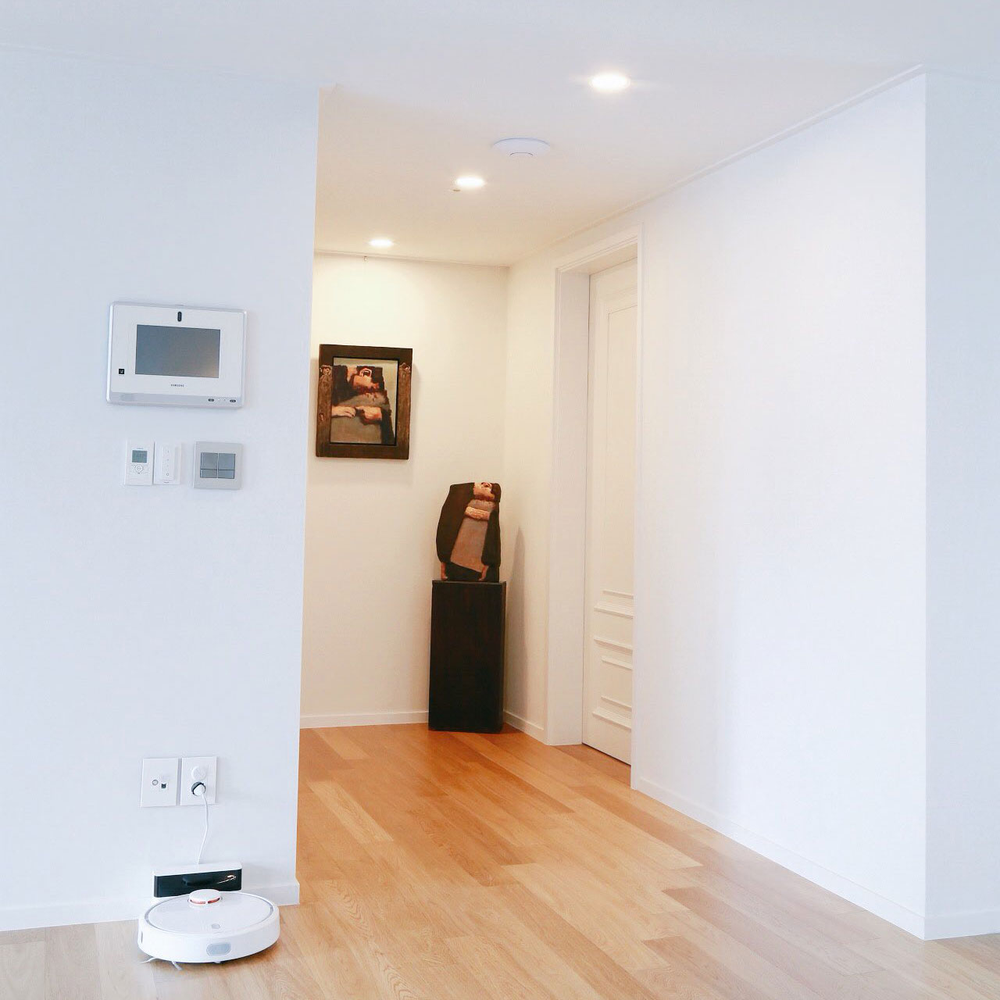
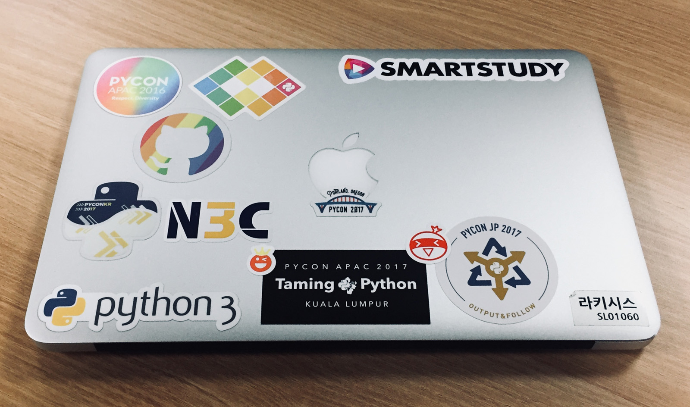

 이번에 이사하며 필립스의 스마트 조명 시스템인 휴(Hue)를 사용하며 알게 된 몇 가지 내용을 정리해본다.
0. 휴에 대해 잘 아는 사람은 별로 없다.
천장등 무스카리, 다운라이트 아펠리온 등을 시공했는데, 한국에는 2018년 1월에 출시된 제품이라 제대로 알고 있는 사람이 없었다. 필립스 코리아의 공식 대리점 중 하나인 정광조명산업을 통해서 …
read more예전부터 네이버 블로그 검색에서 ‘최신순’ 검색을 했을 때 검색어와 무관한 결과가 나와서 갸웃거린 경우가 있었는데, 그냥 네이버 검색이 별론가 생각하고 넘어갔었다.
오늘은 BMW X3 (G01)이 출시되었다는 얘기를 듣고 관심이 생겨 네이버에서 검색해보았다. 역시나 최신 기준으로 검색 결과를 보았을 때 이상한 콘텐츠들이 주를 이루지만, 속는 셈 치고 들어가 콘텐츠를 살펴보았다 …
read more
2017년을 마지막으로 스마트스터디를 퇴직한다.
자신이 직접 디자인한 결재 양식으로 작성된 사직서와 공동대표 및 등기이사 사임 문서에 자필로 서명하는 일은 아무래도 낯선 일일 수밖에 없다. 스스로 선택한 일이라 마음은 무겁지만 불편하지는 않다. 지난 시간 동안 많은, 다양한 일이 있었고, 이제는 내가 보탬이 되지 않는다 생각하여 떠나는 것뿐이다.
회사와 일에 지나치게 몰입하면 …
read more